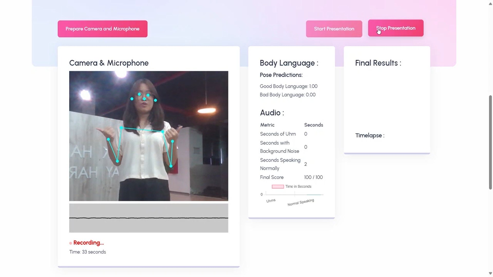

All Projects

Career Craft
Career Craft is an AI-powered career guidance website designed to help users find the perfect job and build a personalized learning path. By integrating advanced AI models, Career Craft offers job recommendations tailored to your skills and interests, provides step-by-step roadmaps for career growth, and features a 24/7 AI chatbot to answer all your career-related questions. Built with Laravel and powered by Llama through Replicate, Career Craft delivers seamless, real-time support for your career journey.App Features:
- - Personalized job recommendations based on your profile and preferences.
- - Dynamic career roadmaps to guide your learning and skill development.
- - 24/7 AI chatbot support to answer career-related questions anytime.
- - User-friendly dashboard to manage your goals and track progress.
Tech Stack:
- Laravel (for backend development)
- Llama (via Replicate for AI chatbot)
- HTML, CSS, JavaScript (for frontend)
- MySQL (for database management)
Special Thanks to My Team
- Check out the full code on GitHub: https://github.com/jennimi/CareerCraft

Cyberbullying Detector
In this project, I used Machine Learning to detect cyberbullying on social media. Together with my team, we developed a model that can identify cyberbullying using a dataset of approximately 50k tweets and implement it into a website to predict a single sentence.App Features:
- - Real-time cyberbullying detection on social media text.
- - Classification of different types of cyberbullying (e.g., gender, religion, ethnicity, etc.).
- - User-friendly interface for text input and detection results.
Tech Stack:
- Python (Scikit-learn, Pandas, NLTK)
- Flask (for backend API)
- HTML, CSS, JavaScript (for frontend)
Special Thanks to My Team
- Bryan Samuel and Nathan Darrell
- Check out the full code on GitHub: https://github.com/AsukaaNao/Cyberbullying_Detection

Yucca AI
In this project, we developed an interactive chatbot that can answer various questions about Yucca, the mascot of Universitas Ciputra Surabaya. This chatbot integrates OpenAI's language model with a Unity-based 3D environment, allowing users to engage in real-time conversations with Yucca inside an immersive application.App Features:
- - Real-time Q&A chatbot using voice recognition about Universitas Ciputra's mascot, Yucca.
- - 3D interactive environment built with Unity for an engaging user experience.
- - Natural language understanding powered by OpenAI Langchain's language model.
Tech Stack:
- Unity and C# (for 3D application and UI)
- Langchain (for natural language processing)
- Whisper (for speech recognition)
- Fastnet API
- ElevenLabs for voice synthesis
Special Thanks to My Team
- Check out the full code on GitHub: https://github.com/HDWKG/Yuuka3

Presentea
Presentea is an innovative web-based AI system designed to evaluate and score a person's presentation skills based on voice and body language. By leveraging machine learning and advanced web technologies, Presentea provides real-time feedback to help users enhance their public speaking abilities.App Features:
- - AI-powered analysis of voice and body language for real-time presentation scoring.
- - Voice & Speech Analysis: Evaluates tone, clarity, pace, and confidence.
- - Body Language Evaluation: Uses Teachable Machine to assess posture, gestures, and facial expressions.
- - Real-time scoring
- - User-friendly web interface for seamless experience.
Tech Stack:
- HTML, CSS, JavaScript (for web development)
- Teachable Machine (for machine learning-based body language analysis)
Special Thanks to My Team

Nusantara Kafe
Nusantara Kafe is a cafe tycoon simulation game developed in Unity, where players build and manage their own traditional Indonesian cafe. Set in a vibrant, culturally rich environment, the game challenges players to serve local delicacies, expand their business, and keep customers happy through smart strategy and creative customization.Game Features:
- - Cafe Customization: Design and upgrade your cafe with traditional Indonesian decor and furniture.
- - Local Dishes: Serve iconic foods like nasi goreng, sate, and es cendol to attract customers.
- - Business Strategy: Manage ingredients, pricing, and customer satisfaction to maximize profits.
- - Staff Management: Hire and train employees to improve service and efficiency.
- - Progressive Gameplay: Unlock new recipes, decorations, and cafe branches as you grow.
Tech Stack:
- Unity (Game Engine)
- C# (Game Logic)
Special Thanks to My Team
- Check out the game at itch.io: https://hdwk.itch.io/nusantara-kafe
- Check out the full code on GitHub: https://github.com/HDWKG/TSA-GameFest

Heartlink
Heartlink is a couple-focused mobile application designed to keep soulmates connected anytime and anywhere. With real-time location tracking, instant notifications, and seamless media sharing, couples can stay close, share moments, and ensure each other's safety. Built with Swift and powered by Firebase, Heartlink delivers a smooth and reliable experience for modern relationships.App Features:
- - Real-time location tracking between connected partners.
- - Instant notifications for check-ins, arrivals, or custom events.
- - Chat system with support for photos, videos, and text messages.
- - Secure and private connection exclusively between paired users.
Tech Stack:
- Swift (for iOS UI development)
- Firebase (for real-time database, authentication, and cloud storage)
- Cloud Firestore (for scalable NoSQL database)
- Firebase Storage (for media uploads and management)
Special Thanks to My Team
- Check out the full code on GitHub: https://github.com/AsukaaNao/Heartlink

Mochi Feel
Mochi Feel is a mental health journaling app designed to help users track their emotions, reflect on their daily experiences, and promote self-awareness. With an intuitive interface and calming design, Mochi Feel makes it easy to express your thoughts and monitor your mental well-being over time. The app utilizes Firebase for secure data storage and Jetpack Compose to deliver a smooth, modern Android experience.App Features:
- - Daily mood tracking with personalized emotion tags.
- - Guided journaling prompts to encourage self-reflection.
- - Calendar view to revisit past entries and mood trends.
- - Secure and private data storage through Firebase.
- - Minimalist and relaxing UI designed with Jetpack Compose.
Tech Stack:
- Android Studio (for app development)
- Jetpack Compose (for modern UI design)
- Firebase (for authentication and real-time database)
- Kotlin (as the primary programming language)
Special Thanks to My Team
- Check out the full code on GitHub: https://github.com/AttraqtiA/Mochi_Feel